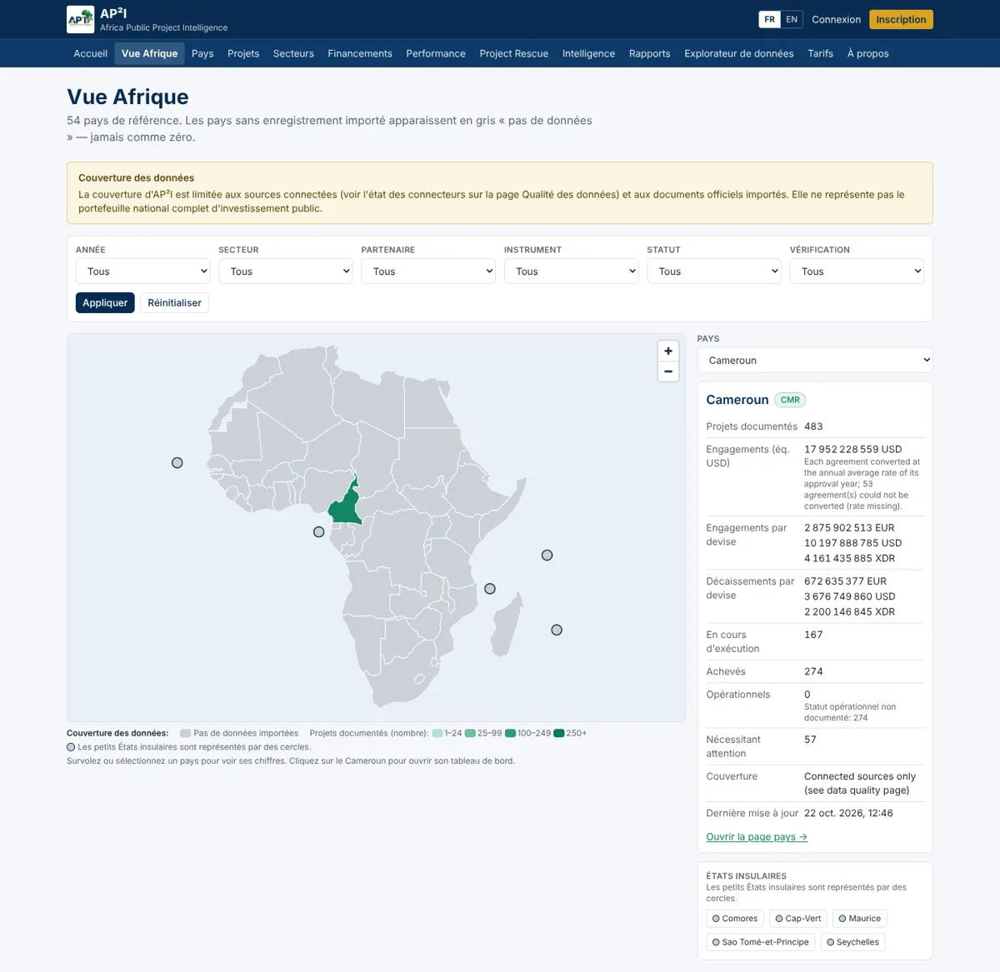
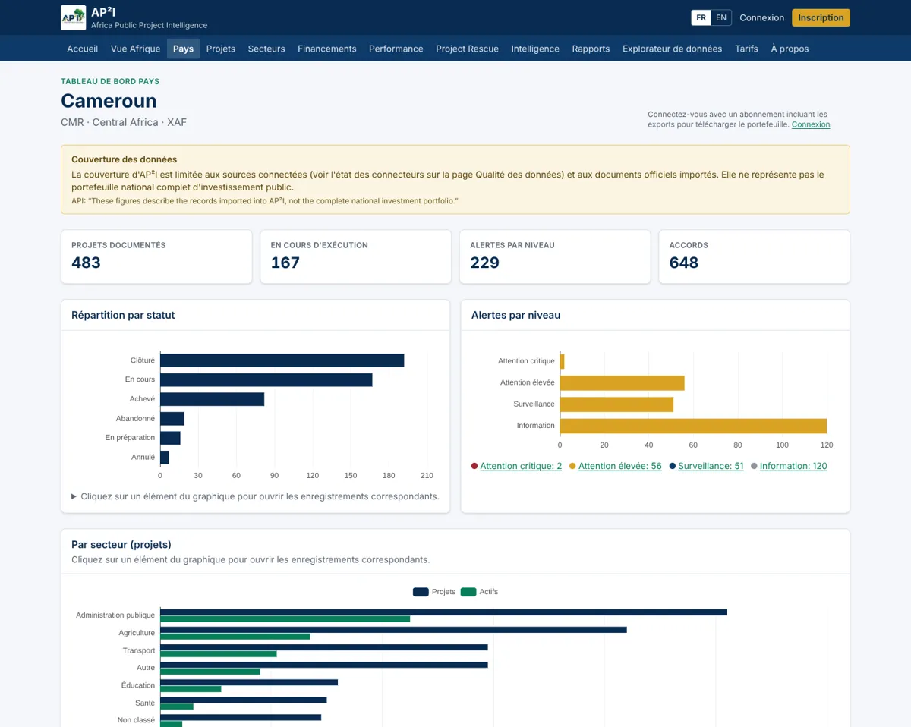
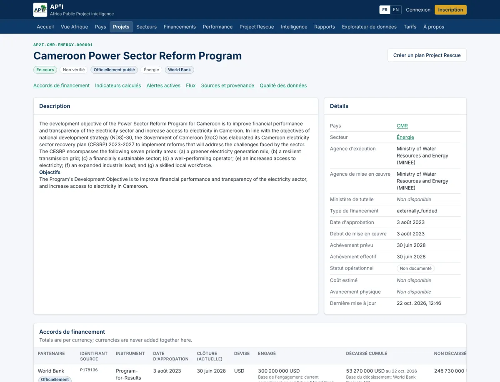
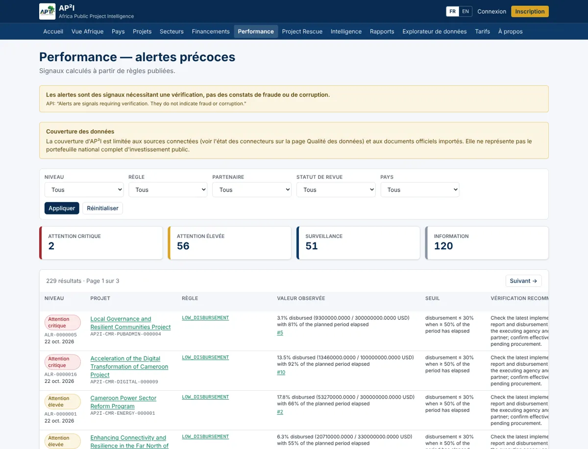

AP²I — Africa Public Project Intelligence
Chaque projet. Chaque dollar. Chaque impact.
AP²I suit les projets d'investissement public à partir des sources officielles des partenaires financiers, avec la provenance de chaque chiffre. Premier déploiement : Cameroun. Architecture prévue pour les 54 pays africains.
Voir la plateforme Notre méthodeCe que la base contient aujourd'hui
Chiffres issus de la base AP²I, tels qu'importés depuis les sources officielles. Seul le Cameroun dispose à ce jour de projets importés.
Instantané du 22 octobre 2026. Ces chiffres évoluent à chaque synchronisation.
Trois piliers
Du suivi financier au redressement des projets en difficulté, chaque étape s'appuie sur des éléments probants.
Investment Intelligence
Portefeuilles par pays, secteur et partenaire ; engagements et décaissements dans leur devise d'origine, avec équivalents USD documentés (taux annuels officiels Banque mondiale et FMI).
Performance Intelligence
Signaux d'alerte fondés sur des règles publiées : décaissement faible, retards, prolongations, notations insatisfaisantes dans les rapports de supervision, statut opérationnel non vérifié.
Project Rescue
Plans de redressement fondés sur les constats, validés par des humains et suivis action par action.
Aucun chiffre sans source
Chaque valeur conserve son enregistrement source (empreinte SHA-256), sa date de publication et sa nature. Une donnée absente reste « non disponible » : elle n'est jamais affichée comme zéro, ni estimée en silence.
Publiée, vérifiée, calculée
Les données distinguent ce qui est publié officiellement, vérifié, calculé, estimé, généré par IA ou manquant.
Rapports lus, pas devinés
Les rapports de supervision (ISR) et d'achèvement (ICR) de la Banque mondiale et les notes de revue IDEV de la BAD sont analysés : notations, dates de clôture, indicateurs de résultats. Une cellule ambiguë est écartée, jamais devinée.
Validation humaine
Un avancement physique cité dans un récit (« 92 % d'achèvement ») reste un candidat jusqu'à validation par un relecteur. Les doublons probables entre bailleurs ne sont jamais fusionnés automatiquement.
Sources connectées
Accès publics officiels uniquement. Les protections anti-robots ne sont pas contournées.
| Partenaire | Source | Contenu |
|---|---|---|
| Banque mondiale | API Projects & Operations ; Documents & Reports ; publication IATI (44000) | Projets, montants, transactions datées, rapports ISR / ICR / revues IEG |
| Banque africaine de développement | Publication IATI (XM-DAC-46002) ; dépôt evrd.afdb.org | Activités et transactions (en UC) ; rapports d'achèvement et notes de revue IDEV |
| Agence française de développement | Publication IATI (FR-3) | Projets et financements |
| Union européenne (DG INTPA) | Publication IATI (XI-IATI-EC_INTPA) | Activités et transactions |
| Banque européenne d'investissement | Publication IATI (XM-DAC-918-3) | Activités et transactions |
| FIDA | Publication IATI (XM-DAC-41108) | Activités et transactions |
Aperçu de la plateforme
Captures de l'application AP²I sur les données réelles du Cameroun (octobre 2026).




Limites connues
Nous les publions plutôt que de les masquer.
- Pas encore de données budgétaires nationales (aucune source lisible par machine identifiée pour le Cameroun).
- Avancement physique, contrats et statut opérationnel des ouvrages ne sont pas publiés par les sources connectées : ces champs restent vides tant qu'un document officiel ne les fournit pas.
- La plupart des documents de la BAD sur www.afdb.org sont protégés contre les robots : ils sont catalogués, non téléchargés.
- Bailleurs sans publication IATI pour le Cameroun (BID, JICA, fonds arabes…) : import manuel uniquement.